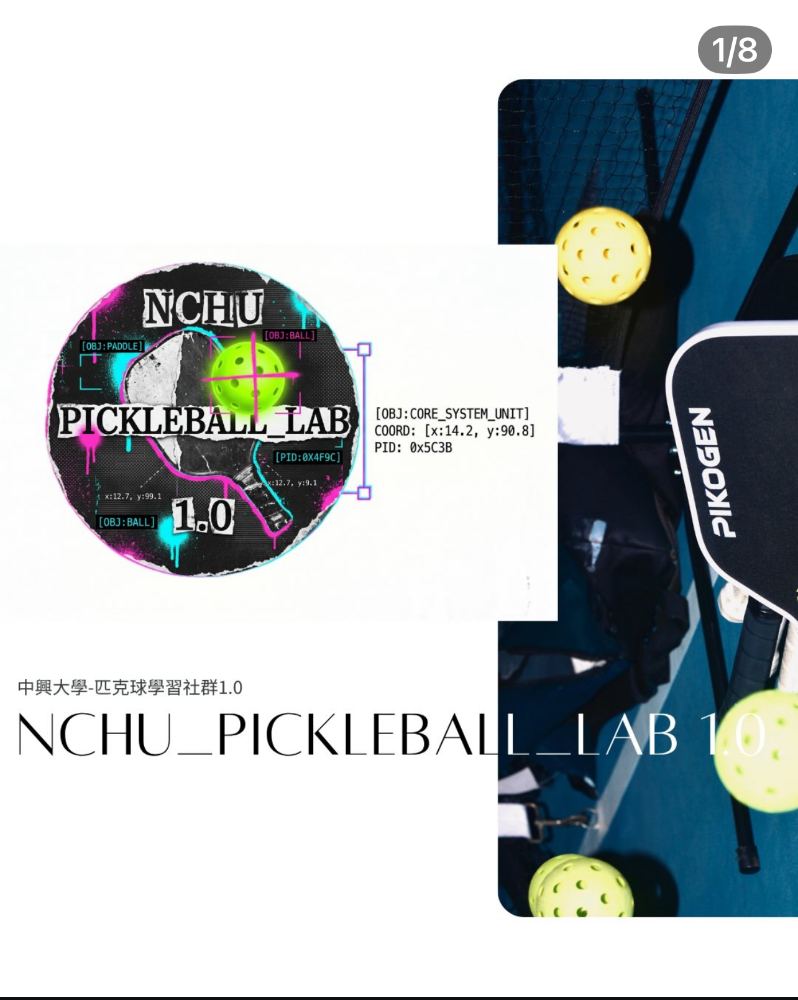

選課、宿舍、繳費、交通、獎助學金⋯高頻問題都有完整步驟解答。搜尋或點分類,點開卡片看詳細指引。(但別再問怎麼交女朋友交男朋友了)
各系的 LINE 群連結目前只有資工系是「點了直接加入」,其他科系的連結都是 QR Code 圖片形式, 沒辦法在網頁上直接按~真的不能怪我們 ==ㄏㄏ。請用興生N-GO 助手輸入你的科系,就會拿到該系的加入方式!
✅ 我是資工系,點我直接加入新生群!(LINE OpenChat) 🔍 其他科系:直接看各系新生群連結列表已收錄科系:環工、應數、農藝、昆蟲、應經、台文、電資、食生、資工、材料、獸醫、生機、企管、中文、外文、會計、水保

🏓通過教務處學生學習社群計畫,從 114-2 開始從零打造的中興匹克球推廣組織! 我們正在做的事:📣 校園推廣、🏸 器材請購(買球拍讓大家免費體驗)、📏 球場劃線、 📊 校園風氣觀測,還有專為新手設計的遊戲化教學——完全零基礎也能邊玩邊學會!
團隊由來自跨管、理、工三院的合作夥伴組成——結合物理系、化學系、土木工程系、企業管理系、 運動與健康管理研究所,多方位技能觸手(鬚鬚)就此誕生🦑! 目前也正逐步導入 OpenCV 影像分析,並持續研究更多 AI 應用,讓匹克球在興大不只是運動,還是一場跨域實驗!
點店家卡片,興生N-GO 助手會直接幫你介紹與推薦!